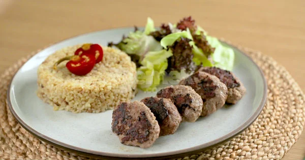

Izgara Köfte Tarifi İçin Malzemeler
- 600
gram
orta yağlı kıyma (dana-koyun karışık)
- 1
dilim
bayat ekmek içi
- 1
adet
küçük boy kuru soğan
- 1
adet
yumurta
- 1
çay kaşığı
kimyon
- 1/2
çay kaşığı
tuz
- 1/2
çay kaşığı
karabiber
Izgara Köfte Tarifi Nasıl Yapılır?
-
Orta yağlı 600 gram kıymayı karıştırma kabına alın. İçerisinde 1 yumurta, 1 adet rendelenmiş kuru soğan, 1 dilim bayat ekmek içi, 1 çay kaşığı kimyon, yarım çay kaşığı tuz ve karabiberi katın.
-
Tüm malzemelerini eklediğiniz köfte harcını kıvam alıp, toparlanana kadar yoğurun ve üzerine streç film kapatıp en az yarım saat buzdolabında dinlendirin.
-
Köfte harcından ceviz büyüklüğünde parçalar kopartın
-
Su ile ıslattığınız ellerinizle köftelere yassı şeklini verin.
-
Köfteleri yağladığınız kızgın tavaya dizin.
-
Ters yüz ederek pişirmeye başlayın. Tüm köfteler pişirilene kadar bu işleme devam edin.
-

Köfteleriniz hazır, sıcak sıcak servis edebilirsiniz. Afiyetler olsun.